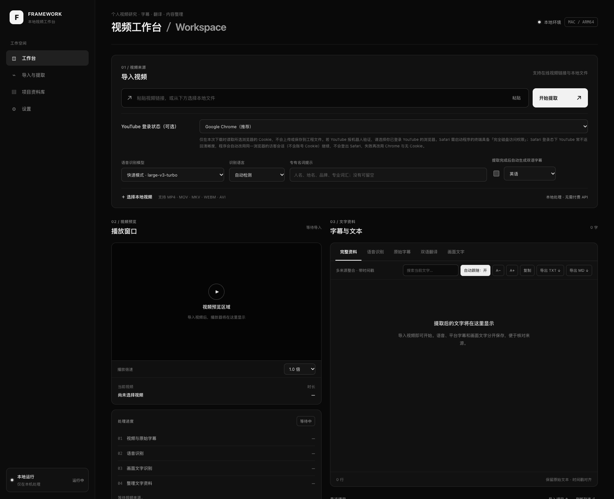
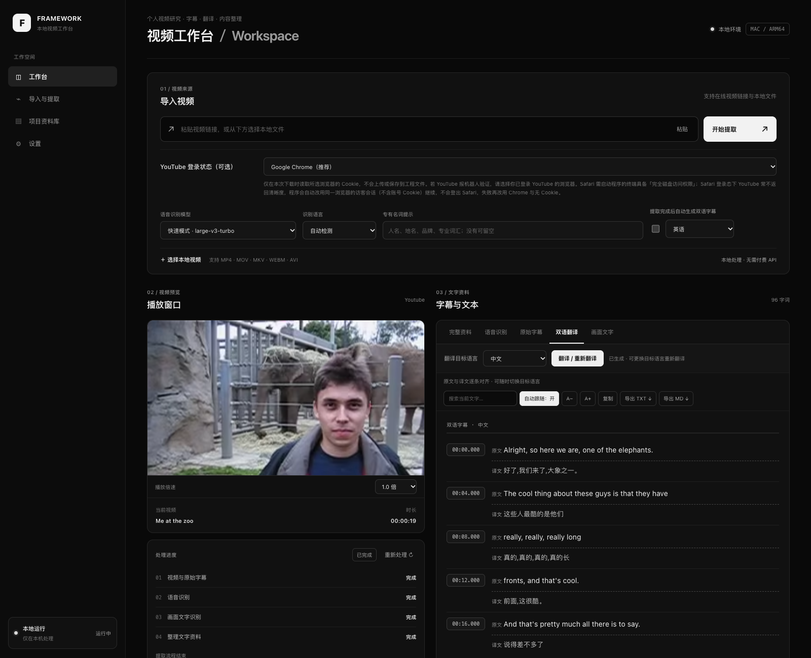

语音识别
将视频中的语音转换为带时间轴的字幕，支持本地 Whisper 模型。
LOCAL VIDEO WORKSPACE
提取视频里的语音、字幕和画面文字，整理成可阅读、可复制、可翻译、可保存的文本。处理在你自己电脑上完成。
本机处理，不上传视频
语音识别 · 画面文字
双语字幕 · 项目管理
一次购买，不自动续费

WHY FRAMEWORK
很多重要信息只存在于视频里：一段课程、一次访谈、一条讲解、一门语言。看完就过去，想找却找不到。
FRAMEWORK 把视频里的语音和画面文字提取出来，放进一个可编辑、可检索、可归档的项目里。你仍然拥有原始视频和全部文本。
CAPABILITIES
不是单点功能，而是从视频到文本、从文本到理解的连续工作。
将视频中的语音转换为带时间轴的字幕，支持本地 Whisper 模型。
提取视频画面里出现的标题、注释和说明文字，让画面信息也能被检索。
将提取文本翻译为其他语言，原文与译文逐条对齐，方便理解与对照。
字幕与播放时间轴同步，点击即可回到对应画面，文本可直接复制或导出。
每个视频对应一个项目，处理记录、文本和翻译都留在项目里，随时回来继续。
视频、字幕和项目文件主要保存在本机，不依赖云端存储，也不需要上传整段视频。

WORKFLOW
不需要先学一套复杂工具。导入视频，剩下的按流程走。
导入本地视频，或输入视频链接。
识别语音与画面文字，生成带时间轴的文本。
查看原文、译文和对应画面，逐条核对表达。
复制、导出字幕与文本，或把整个项目归档保存。
USE CASES
不追求万能。它解决的是“视频里的信息取不出来”的问题。
把外语视频变成原文与译文对照的字幕，反复看、反复查。
保存课程、访谈、讲解视频的要点，整理成可搜索的笔记。
提取观点、数据和画面文字，为后续分析保留原始材料。
把值得留下的视频内容转成文本，减少重复观看和查找。
LOCAL FIRST
FRAMEWORK 是下载后在你电脑上运行的桌面软件。语音识别、画面文字识别、翻译和项目管理都在本地完成。官网只负责产品展示、账号、授权和下载，不接收视频文件。
PRICING
三档均为一次性购买，不自动扣费、不自动续订。到期后需要继续使用时，再由你手动购买；续费按到期时间累加。
START
下载对应系统版本，解压启动。官网不处理视频，所有内容都留在你的电脑里。